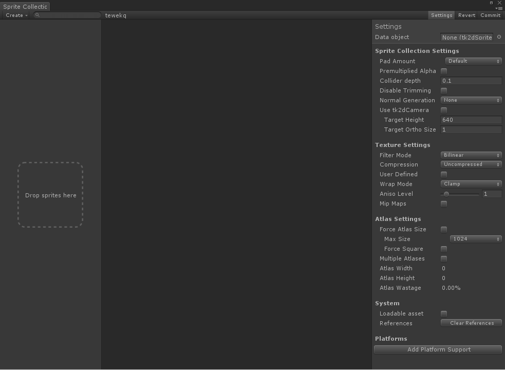
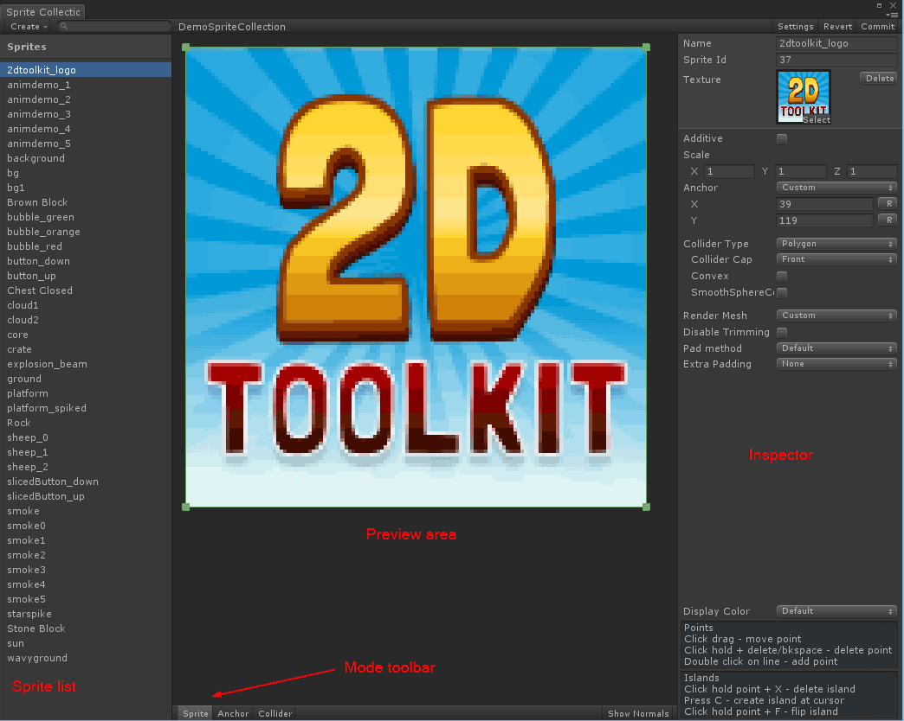
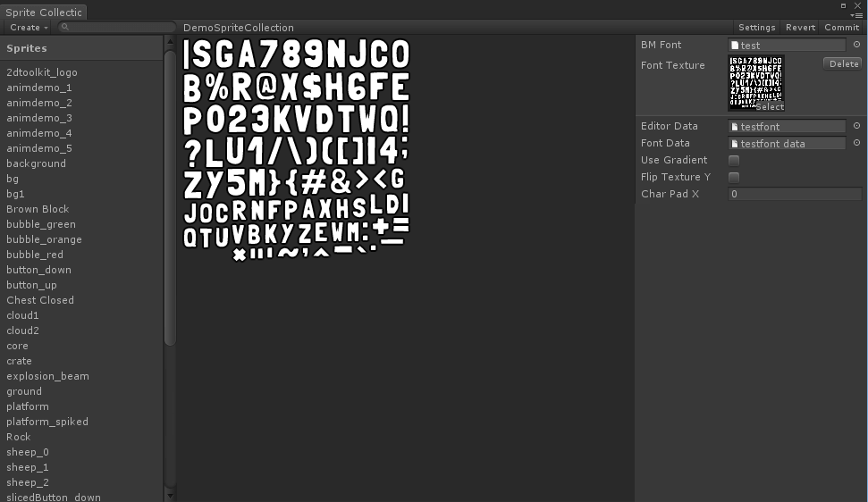
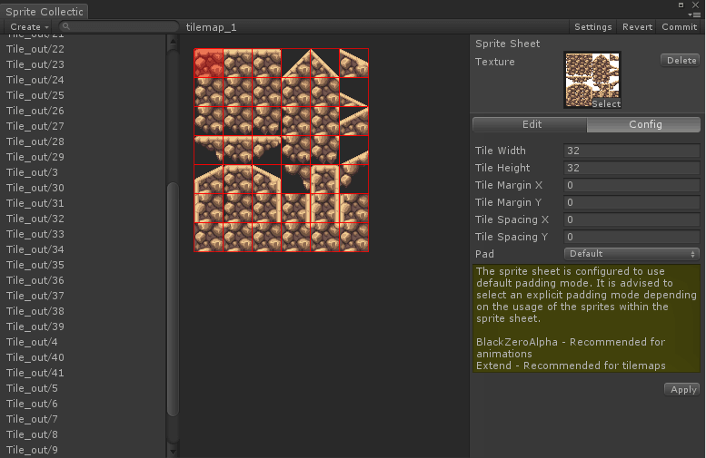

Documentation
Script Reference
Forum
Documentation
Script Reference
Forum
All editing of the sprite collection is carried out in the Sprite Collection editor. This page will go through the different views in the sprite collection editor.
All changes in the sprite collection editor are performed on a local copy and are only saved when Commit is pressed.

Create - Brings up a pop up menu to create new fonts & sprite sheet importers within this sprite collection.
Drop sprites here - Drag your textures in Unity and drop them in that box to add them to the sprite collection.
Settings - Displays the sprite collection settings overlay.
Commit - Commits changes to the sprite collection, force builds the atlas manually, and updates all sprites in the scene.
Revert - Reverts to the state of the sprite collection at last Commit.
Data object - A reference to the data object. This data object is what is used by the game.
Pad Amount - Sets the pad amount globally for all sprites in the collection. You can increase padding selectively if necessary.
Premultiplied alpha - This is a rendering technique where the alpha is stored premultiplied in the atlas. This has the interesting side-effect of allowing additive and alpha blended sprites within the same sprite collection, and thus within the same draw call. In addition to that, alpha edge artefacts are generally reduced by having this ticked. The downside to having this ticked is that you will lose precision in very transparent textures. Untick this if you have a large number of very semi-transparent sprites.
> Note: If you switch this after your sprite collection has been created, you will have to switch shaders manually.
Collider depth - The depth of the collider in the z coordinate (into the screen). You may need to increase this to work better depending on the scale of your objects.
Disable trimming - Sprites in this sprite collection will not be trimmed (empty space removed from the source images).
Normal generation - You can set up the sprite collections to generate normals and tangets, if you need to light your sprites. Setting this option doesn't automatically light your sprites, you will still need to apply a lit material to it. Two materials are provided from version 1.57 - LitBlendVertexColor and LitPremulVertexColor. You can also use your own shaders.
Use tk2d Camera - Tick this when these sprites are only going to be used with tk2dCameras. When ticked, they will be created pixel perfect when a tk2dCamera is active.
Target height and Target Ortho Size - Set this to your target game resolution height and the ortho size of the camera viewing these sprites. For example, if your target resolution is 640x480 and the camera you are using in the game has an ortho size of 10, set the Target height field to 480 and Target Ortho Size to 10 respectively. When you create sprites they will automatically be created at the correct size at the defined resolution. These are only visible when //Use tk2d Camera// is unticked.
Filter mode - Selects the filter mode used by the texture, telling it what to do when the texture is scaled up or down. Select Point if you would like a pixelated look. The default, Bilinear, will have a smooth scaled look.
Compression - Sets the compression of the atlas texture. Version 1.57 introduces support for dithered 16 bit atlas textures. Select Dithered16BitAlpha or Dithered16BitNoAlpha depending on whether your source textures have semi-transparent bits or not. In most cases Dithered16BitAlpha will be the most appropriate 16 bit mode. In terms of texture sizes, in descending order: Uncompressed > 16Bit > Compressed. Use compressed if you can put up with the compression artefacts.
> Note: You can still use Unity's built in platform specific overrides on top of this.
User defined - If this is set, 2D Toolkit will not change any settings on the texture itself. Use this if you would like to set things up yourself.
Wrap mode - Defaults to clamp. Leave it on clamp unless you need it for some shader effect.
Aniso Level - This is just here for convenience. Leave at default for best performance.
Mip Maps - Whether the atlases generated by this sprite collection have mipmaps. Mipmaps generally add 1/3 to file/memory size of the texture. Leave off unless you need it to minimize shimmering if you scale your textures down a lot.
Force atlas size - Explicity set up an atlas size. If you want a fixed 1024x1024 atlas, pick this.
Max Size - The largest texture size permitted. 2D Toolkit will automatically try to make a best fit texture with this value as the maximum, so set this to the absolute maximum value you'd want.
Force Square - Makes sure the atlas is square.
Multiple Atlases - Allows multiple atlases to be generated from this Sprite Collection. This is only recommended for animated sprites, as your draw calls can unexpectedly increase depending on the order of sprites in the atlases. When Multiple Atlases are enabled, you will not be able to use Dicing and other advanced features. Creating and managing multiple sprite collections manually is much more efficient.
Atlas Width, Height - Read only fields showing the current atlas width and height. The atlas size is cropped to the smallest possible size, so setting your Max Texture Size to 1024 is fine even if you only use 64x64 as your atlas will be cropped.
Atlas Wastage - Read only field showing how much of atlas space is wasted after trimming. If there is a large amount of wastage, you could put more sprites in the collection at no additional cost!
Loadable Asset - When ticked, the asset will be loadable using tk2dSystem.LoadResourceByName<tk2dSpriteCollectionData>("name");. You are free to name the sprite collection. It is a great way to load assets at runtime without resorting to moving objects into resources folders.
Selects and set up platform specific sprite collections.
Lists all the current materials used by the sprite collection. You can also manage custom materials here.

Additive - Use additive blending on these textures. This option is only available on sprite collections set-up with Premultiplied Alpha set.
Anchor - Sets up the anchor (pivot) position of the sprite. Selecting custom will expose the "Anchor" option in the Mode toolbar, and activating it will allow you to interactively position the anchor. The anchor will always be snapped to a pixel boundary as to avoid blurry sprites.
Collider Type - Select the collider to be built for this sprite.
Render Mesh - Selects different available geometry used to render the mesh.
Disable Trimming - Disables trimming on this sprite.
Pad Method

Placeholder

Placeholder